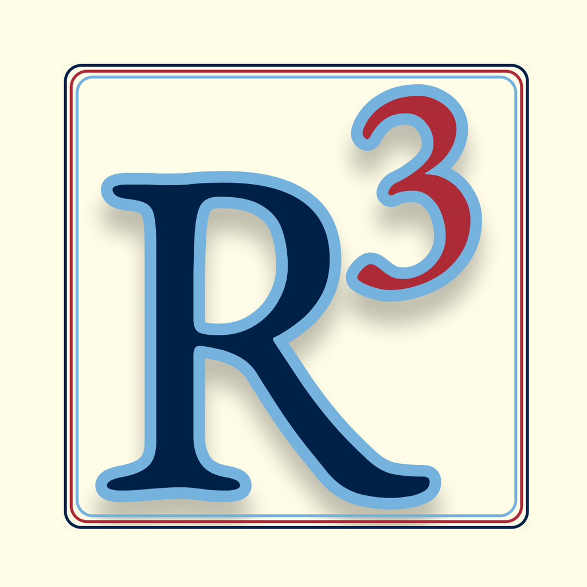
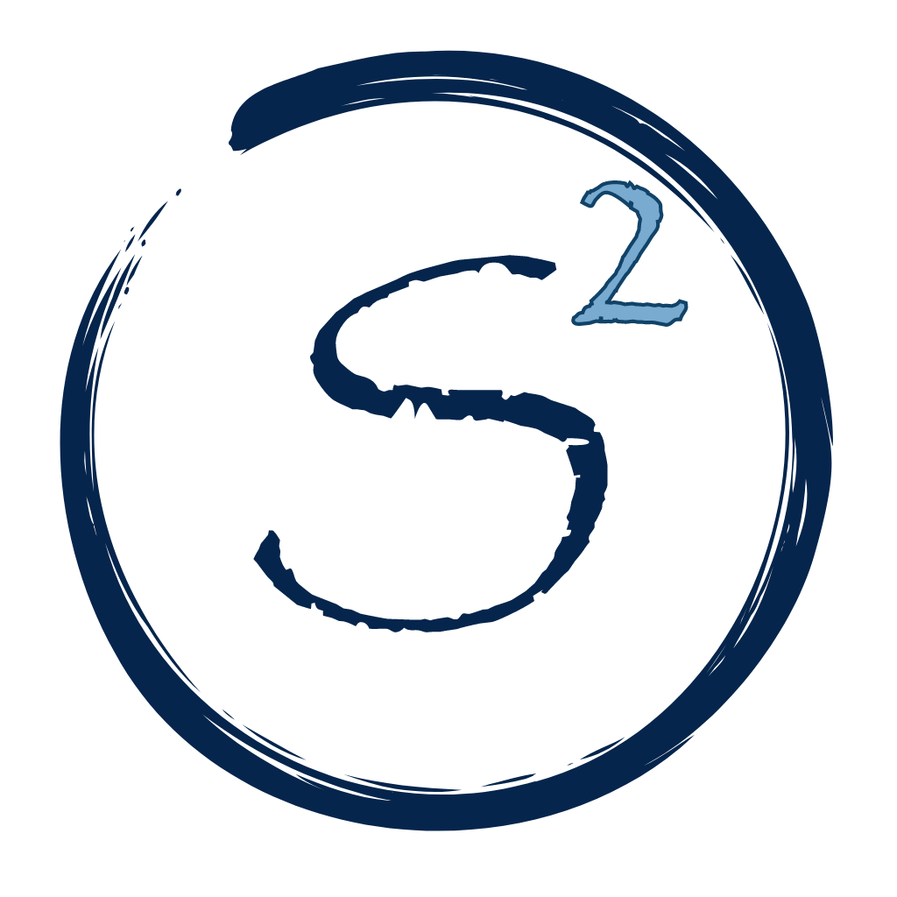
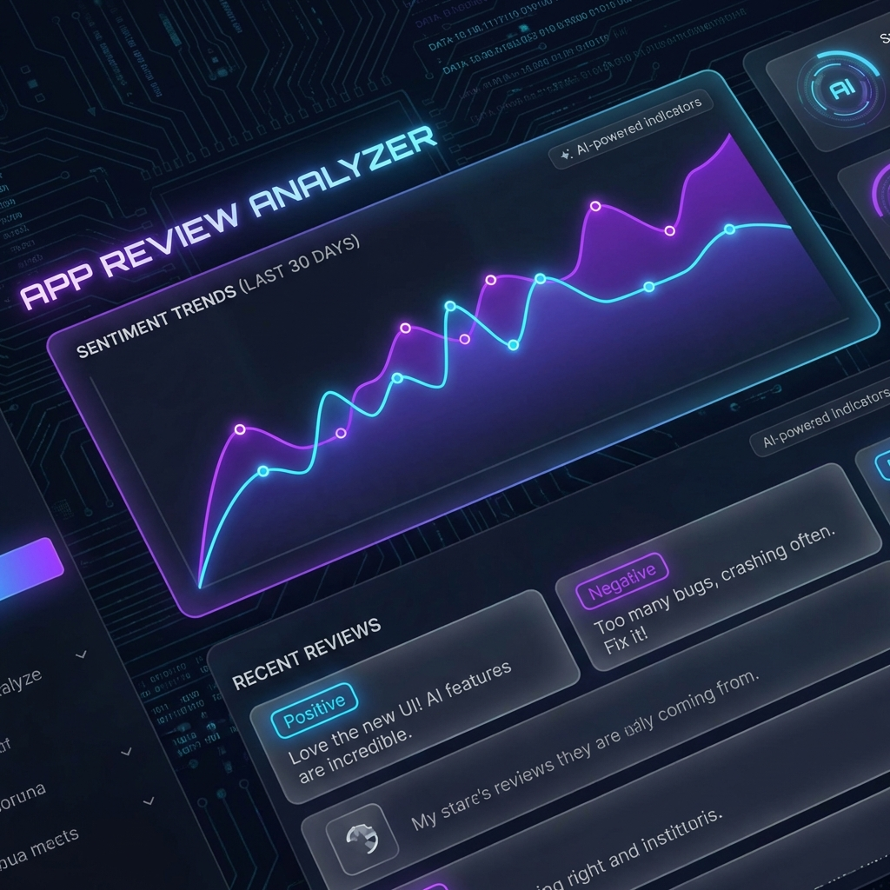
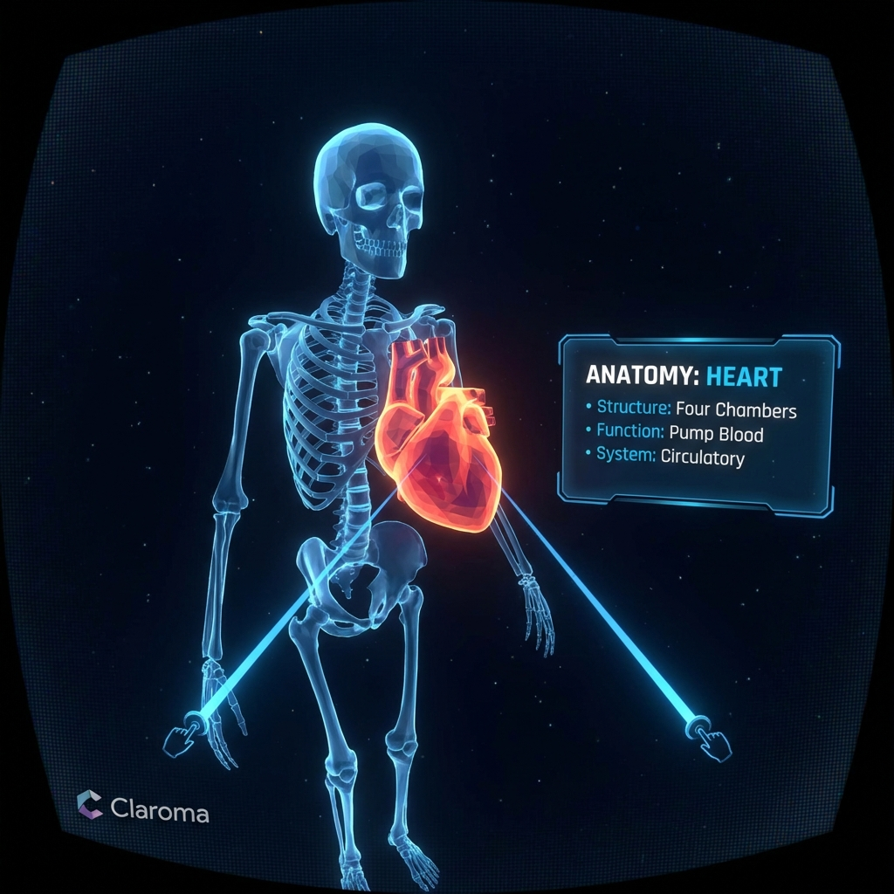

I’m a Computer Science PhD candidate at the University of Rhode Island (ASSET Lab), working on accessibility and immersive technology. My research focuses on making VR usable and empowering for adults with intellectual and developmental disabilities (I/DD), and translating insights into practical design guidance and deployed applications. I have the privilege of being guided by Prof. Krishna Venkatasubramanian and also been lucky to collaborate with Dr. Tina-Marie Ranalli
Published in top HCI and accessibility venues (CHI, DIS, TACCESS) and ACM flagship magazine (CACM), translating findings into practical guidance.
Co-designed and developed mobile apps supporting safety and self-care for adults with I/DD—released on major app stores.
Former Associate Tech Lead in fintech—built microservices and DevOps pipelines; improved API performance by ~40% via profiling and caching.

R3 is a groundbreaking app designed for and with adults with intellectual and developmental disabilities (I/DD) to help them learn to recognize, report, and respond to abuse. Through audio, visual, and narrated content, users learn about the five types of abuse. The app features videos, quizzes, and interactive activities specifically designed for cognitive accessibility.
Designed by the ASSET Lab at URI for the Massachusetts Disabled Persons Protection Commission (DPPC), R3 is based on the "Awareness and Action" curriculum. It includes a "Feelings check-in" and a quick-exit home button to ensure user safety and comfort.

The companion to R3, S2 is a self-care app supporting survivors of abuse, particularly those with I/DD. It emulates the practices of Peer Support Leaders—individuals with I/DD who empower survivors in the community.
S2 features engaging avatar sidekicks like "Patty Q" to offer encouragement during self-care activities. It was developed in close collaboration with the MA DPPC and direct input from individuals with disabilities to ensure it is soothing, supportive, and accessible.

An AI-powered intelligence tool that unlocks actionable insights from user feedback. By analyzing reviews from Google Play or the App Store, it automatically identifies sentiment, key pain points, and emerging trends.
Features a modern dark-mode interface with real-time sentiment tracking, helping developers and product managers make data-driven decisions to improve their applications.

A Virtual Reality application that simplifies learning complex human anatomy. Built with WebXR, it allows users to interact with detailed 3D models of the skeleton, muscles, and heart using Oculus controllers.
Integrated with the Gemini Vision API, Claroma lets users point to astronomical regions to receive instant, descriptive explanations, transforming 2D textbook memorization into an immersive, intuitive 3D experience.
Researchers from the ASSET research group at the University of Rhode Island are conducting a study to develop guidelines for accessible VR apps for adults with intellectual or developmental disabilities (I/DD).